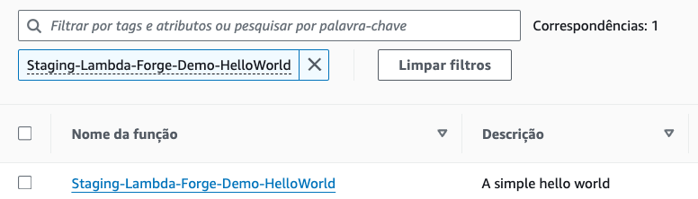
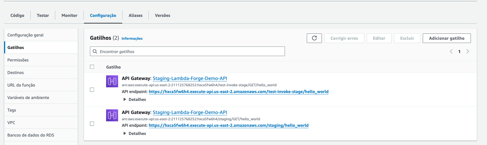
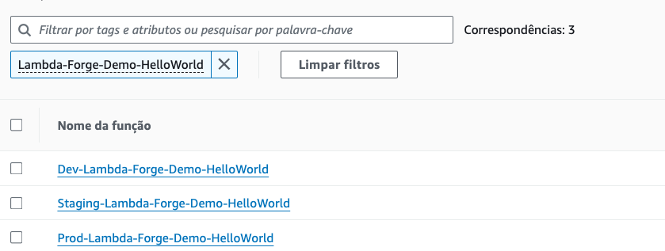

Getting Started
Install and Configure AWS CDK
Lambda Forge is built on top of AWS Cloud Development Kit (CDK) and it's essential for defining cloud infrastructure in code and provisioning it through AWS CloudFormation. Execute the following commands to install the AWS CDK globally and set up your AWS credentials:
npm install -g aws-cdk
aws configure
During the configuration, you will be prompted to enter your AWS Access Key ID, Secret Access Key, default region name, and output format.
Create a new directory
mkdir lambda_forge_demo
cd lambda_forge_demo
Create a new virtual environment
python3 -m venv venv
source venv/bin/activate
Install lambda-forge
pip install lambda-forge --extra-index-url https://pypi.org/simple --extra-index-url https://test.pypi.org/simple/
Verify Installation
Having successfully installed Lambda Forge, you are now ready to explore the capabilities of the Forge Command Line Interface (CLI). Begin by entering the following command to access the comprehensive list of available options and commands:
forge --help
Create a new Github Repository
Lambda Forge simplifies your workflow by automatically configuring a CI/CD pipeline within a GitHub repository. Therefore, our next step is to create a new repository on GitHub. This foundational setup enables Lambda Forge to seamlessly integrate and automate the development, testing, and deployment processes for your projects.
Create a new project:
Let's start a new project without generating docs initially.
forge project lambda-forge-demo --repo-owner "$GITHUB-USER" --repo-name "$GITHUB-REPO" --no-docs
Make sure to replace $GITHUB-USER and $GITHUB-REPO with your actual GitHub username and the repository name you established in the previous step.
Project Structure
Upon creatig your project, several directories and files are automatically generated for you. This initial structure is designed to streamline the setup process and provide a solid foundation for further development.
In the upcoming sections of this tutorial, we'll explore each of these components in detail. For now, familiarize yourself with the foundational structure that should resemble the following:
.
├── authorizers
│ └── __init__.py
├── functions
│ └── __init__.py
├── infra
│ ├── __init__.py
│ ├── services
│ │ ├── __init__.py
│ │ ├── api_gateway.py
│ │ └── aws_lambda.py
│ ├── stacks
│ │ ├── __init__.py
│ │ ├── dev_stack.py
│ │ ├── lambda_stack.py
│ │ ├── prod_stack.py
│ │ └── staging_stack.py
│ └── stages
│ ├── __init__.py
│ └── deploy.py
├── .coveragerc
├── .gitignore
├── app.py
├── cdk.json
├── pytest.ini
└── requirements.txt
Creating Your First Hello World Function
Embarking on the journey with Lambda Forge, creating a public "Hello World" function is a fantastic way to get started. This function will serve as a simple demonstration of Lambda Forge's ability to quickly deploy serverless functions accessible via an HTTP endpoint. Here's how you can create your very first public Hello World function.
forge function hello_world --method "GET" --description "A simple hello world" --public
This command instructs Lambda Forge to generate a new lambda function named hello_world. The --method "GET" parameter specifies that this function will be accessible via an HTTP GET request. The --description provides a brief explanation of the function's purpose, and --public makes the function publicly accessible, allowing anyone with the URL to invoke it.
Understanding the Function Structure
When you create a new function with Lambda Forge, it not only simplifies the creation process but also sets up a robust and organized file structure for your function. This structure is designed to support best practices in software development, including separation of concerns, configuration management, and testing. Let's break down the structure of the automatically generated hello_world function:
functions/
└── hello_world/
├── __init__.py
├── config.py
├── integration.py
├── main.py
└── unit.py
functions/This directory is the root folder for all your Lambda functions. Each function has its own subdirectory within this folder.hello_world/The hello_world subdirectory contains all the necessary files for your function to run, be configured, and tested.__init__.pyThis file marks the directory as a Python package, allowing its modules to be imported elsewhere. It's a standard practice in Python to facilitate package organization.config.pyHolds the configuration settings for the function. These might include environment variables, resource identifiers, and other parameters critical for the function's operation. Keeping configuration separate from code is a best practice, as it enhances maintainability and scalability.integration.pyContains integration tests that simulate the interaction of your function with external services or resources. These tests ensure that your function integrates correctly with other parts of the system and external dependencies.main.pyThis is where the core logic of your Lambda function resides. The handler function, which AWS Lambda invokes when the function is executed, is defined here. You'll implement the functionality of your "Hello World" response in this file.unit.pyContains unit tests for your function. Unit tests focus on testing individual parts of the function's code in isolation, ensuring that each component behaves as expected. This is crucial for identifying and fixing bugs early in the development process.
Why This Structure Matters
This organized approach offers several benefits:
- Maintainability: Separating different aspects of the function (such as configuration, testing, and core logic) makes it easier to manage and update the code.
- Scalability: As your application grows, having a consistent structure across functions allows for easier scaling and integration of new features or services.
- Testing: Including both unit and integration tests from the outset encourages a testing culture, leading to more robust and reliable code.
As you continue to develop with Lambda Forge, this structure will help keep your projects organized and maintainable, regardless of their complexity or scale.
Configuring Your Lambda Function Dependencies
The Services Class
Within the infra/services/__init__.py file, you'll find the Services class, a comprehensive resource manager designed to streamline the interaction with AWS services. This class acts as a dependency injector, enabling the easy and efficient configuration of AWS resources directly from your config.py files.
from infra.services.api_gateway import APIGateway
from infra.services.aws_lambda import AWSLambda
class Services:
def __init__(self, scope, context) -> None:
self.api_gateway = APIGateway(scope, context)
self.aws_lambda = AWSLambda(scope, context)
Utilizing the Services Class in config.py
In our Lambda Forge projects, the config.py file plays a crucial role in defining and configuring the dependencies required by a Lambda function. This includes everything from AWS Lambda layers, permissions to environment variables and DynamoDB tables. By passing an instance of Services to our configuration classes, we can seamlessly create and manage resources such as Lambda functions and API Gateway endpoints.
from infra.services import Services
class HelloWorldConfig:
def __init__(self, services: Services) -> None:
function = services.aws_lambda.create_function(
name="HelloWorld",
path="./functions/hello_world",
description="A simple hello world"
)
services.api_gateway.create_endpoint("GET", "/hello_world", function, public=True)
Implementing the Lambda Function
Your Lambda function's implementation should be in the main.py file. Below is an example showcasing our simple HelloWorld function:
import json
from dataclasses import dataclass
@dataclass
class Input:
pass
@dataclass
class Output:
message: str
def lambda_handler(event, context):
return {
"statusCode": 200,
"body": json.dumps({"message": "Hello World!"})
}
The Input and Output data classes define the structure for each endpoint, laying the groundwork for generating the comprehensive Swagger documentation. This documentation precisely outlines the expected input and output data for every endpoint.
Considering the project was initiated with the --no-docs flag, let's temporarily skip this documentation generation phase. However, we intend to revisit and implement documentation generation at a future point in this tutorial.
Deploying Your Lambda Function
To deploy your Lambda function, you should integrate the Config class within the infra/stacks/lambda_stack.py file.
The Forge CLI streamlines this process by automatically incorporating it for you.
from aws_cdk import Stack
from constructs import Construct
from infra.services import Services
from lambda_forge import release
from functions.hello_world.config import HelloWorldConfig
@release
class LambdaStack(Stack):
def __init__(self, scope: Construct, context, **kwargs) -> None:
super().__init__(scope, f"{context.name}-CDK", **kwargs)
self.services = Services(self, context)
# HelloWorld
HelloWorldConfig(self.services)
Create a GitHub Personal Access Token
Lambda Forge uses CodePipeline to interact with your GitHub repository. To enable this, generate a GitHub personal access token by following these steps:
- Navigate to "Developer Settings" in your GitHub account.
- Select "Personal access tokens," then "Tokens (classic)."
- Click "Generate new token," ensuring the "repo" scope is selected for full control of private repositories.
- Complete the token generation process.
Your token will follow this format: ghp_********************************
Store the token on AWS Secrets Manager
Save this token in AWS Secrets Manager as plain text using the precise name github-token. This specific naming is vital as it corresponds to the default identifier that the CDK looks for within your AWS account.
Push Your Code To Github
With all the required settings now in place, we're ready to upload our code to the GitHub repository.
Lambda Forge is designed to support a multi-stage deployment process, automatically creating environments for Production, Staging and Development. These environments correspond to the main, staging, and dev branches, respectively.
Let's proceed by setting up these branches:
# Initialize the Git repository
git init
git add .
# Commit the changes
git commit -m "Initial commit"
# Set the remote repository
git remote add origin git@github.com:$GITHUB_USER/$GITHUB_REPO.git
# Create, checkout, and push the 'main' branch
git checkout -b main
git push -u origin main
# Create, checkout, and push the 'staging' branch
git checkout -b staging
git push -u origin staging
# Create and push the 'dev' branch
git branch -M dev
git push -u origin dev
Deploying the Stacks
After pushing your code to GitHub, the next step is deploying your stacks to AWS using the AWS Cloud Development Kit (CDK). Deploy your stacks by running the following commands in your terminal:
cdk synth
cdk deploy --all --require-approval never
These commands kick off the creation of three separate stacks in AWS CloudFormation:
- Dev-Lambda-Forge-Demo-Stack: For the development stage.
- Staging-Lambda-Forge-Demo-Stack: For the staging stage.
- Prod-Lambda-Forge-Demo-Stack: For the production stage.
Every resource created on AWS by Lambda Forge adhere to a convention that incorporates the deployment stage, project name and the resource name, ensuring a clear and systematic identification across the project. The project name, a central element of this naming convention, is specified in the cdk.json file, which Forge automatically configured.
...
"region": "us-east-2",
"account": "",
"name": "Lambda-Forge-Demo",
"repo": {
"owner": "$GITHUB-USER",
"name": "$GITHUB-REPO"
},
...
Following a successful deployment, three corresponding pipelines are automatically generated for each stage:
- Dev-Lambda-Forge-Demo-Pipeline
- Staging-Lambda-Forge-Demo-Pipeline
- Prod-Lambda-Forge-Demo-Pipeline
You can view these pipelines by navigating to the AWS CodePipeline dashboard.

Customizing Pipeline Steps
In Lambda Forge, pipelines are defined within their specific stack files located at infra/stacks/dev_stack.py, infra/stacks/staging_stack.py, and infra/stacks/prod_stack.py. Below is an outline of the default steps included in each pipeline, along with details on how they function and how you can interact with them.
-
Coverage: Measures the percentage of your production code covered by unit tests, failing if coverage falls below 80% as default. To view the coverage report, navigate to
Details -> Reportsin CodePipeline. -
Unit Tests: Runs unit tests to validate the functionality of individual components within your code. Access the unit test report via
Details -> Reportsin CodePipeline. -
Validate Docs: Verifies that all Lambda functions invoked by API Gateway have their Input and Output data classes correctly defined in the
main.pyfile. -
Validate Integration Tests: This step ensures that all endpoints triggered by the API Gateway are covered by at least one integration test. To achieve this, use the custom decorator
@pytest.mark.integrationand specify the method and endpoint arguments to declare that the test covers a specific endpoint. -
Generate Docs: Automatically produces Swagger documentation for all API Gateway endpoints. This requires
InputandOutputdata classes for each Lambda function in themain.pyfile. Documentation is deployed directly to API Gateway and is accessible at the/docsendpoint. -
Integration Tests: Performs integration testing to assess the system's overall functionality. Access the integration test report through
Details -> Reportsin CodePipeline.
Lambda Forge provides a suggested pipeline configuration, emphasizing flexibility in its design. You're encouraged to customize these pipelines to fit your project's needs. Whether adding new steps, adjusting existing ones, or reordering them, the framework is designed to accommodate your project's specific requirements. This level of customization ensures that your pipelines align closely with your development, testing, and deployment strategies, providing a robust foundation for your application's continuous integration and delivery processes.
After the pipelines have executed, you may notice that while the Development pipeline succeeds, the Staging and Production pipelines fail.

This failure is expected, It occurs because the integration test step attempts to send a GET request to the deployed Lambda function. However, since the Stack has just been created, the Lambda function's URL is not yet available, causing the test to fail.
import pytest
import requests
from lambda_forge.constants import BASE_URL
@pytest.mark.integration(method="GET", endpoint="/hello_world")
def test_hello_world_status_code_is_200():
response = requests.get(url=f"{BASE_URL}/hello_world")
assert response.status_code == 200
Accessing Your Lambda Function
Note that the Integration_Test step failed after the deployment in the staging pipeline.

This means that both Dev and the Staging Lambda function are successfully deployed.
In this tutorial, we will use the staging URL to test our endpoints, considering it as a pre-production layer. Feel free to utilize the development URL instead if it suits your case better.
Navigate to the AWS Lambda section on AWS and search for the Staging-Lambda-Forge-Demo-HelloWorld function in the list of Lambda functions.

Once you've found your function, click on it to view its details. Proceed by selecting the Configuration tab, followed by Triggers to uncover the integration points.

In this tutorial, the generated URL is:
https://8kwcovaj0f.execute-api.us-east-2.amazonaws.com/staging/hello_world.
By following the link provided, you should be greeted by a simple "Hello World" message in your web browser, indicating that your Lambda function is operational and accessible via the URL generated by API Gateway.
{
"message": "Hello World!"
}
Configuring the BASE URL for Integration Tests
With the Lambda function's URL at hand, we identify that the segment before /hello_world acts as the BASE URL. For the purposes of this tutorial, the BASE URL is https://8kwcovaj0f.execute-api.us-east-2.amazonaws.com/staging. This is the URL you need to copy.
Proceed to incorporate this URL into your project's configuration by setting it as the value for base_url in your cdk.json file.
| cdk.json | |
|---|---|
40 41 42 43 44 45 46 47 48 49 50 51 | |
Pushing Updated Code to GitHub
With the BASE URL configured for our integration tests, it's time to push the updated code to GitHub and aim for successful integration test outcomes across all deployment stages.
Follow these steps to commit your changes and deploy them across the development, staging, and production branches:
# Add changes to the staging area
git add .
# Commit the changes with a descriptive message
git commit -m "Configure BASE URL for integration tests"
# Push changes to the 'dev' branch.
git push origin dev
# Switch to the 'staging' branch, merge changes from 'dev', and push
git checkout staging
git merge dev
git push origin staging
# Switch to the 'main' branch, merge changes from 'staging', and push
git checkout main
git merge staging
git push origin main
After executing these commands, all associated pipelines should be triggered once again.
Once the execution of all pipelines is complete, you should observe that all stages have successfully passed.


Congratulations! 🎉 You've successfully deployed your very first Lambda function across three distinct stages using Lambda Forge! 🚀
In this tutorial, the links are: